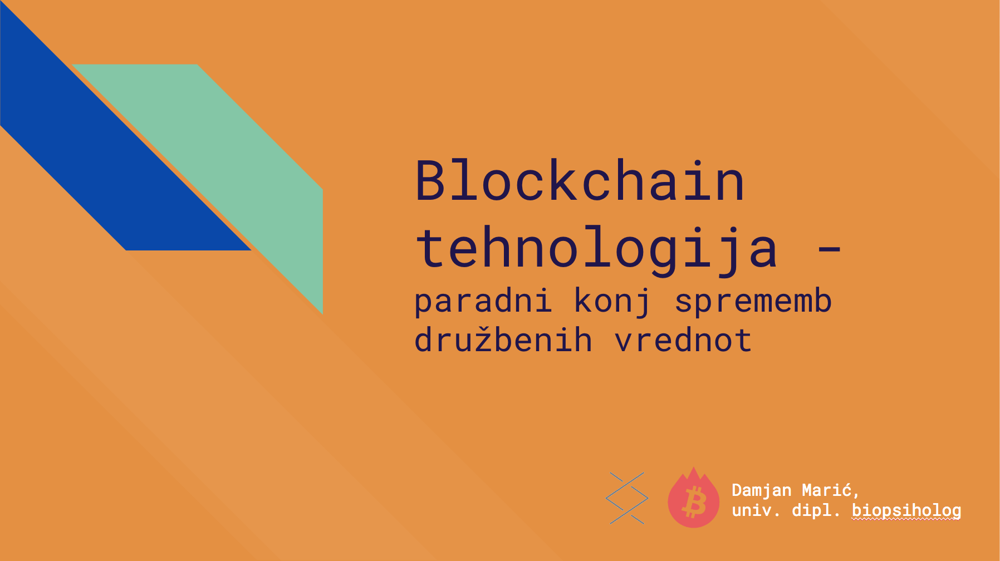
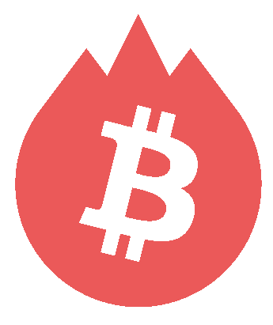

Blockchain

Tehnologija veriženja blokov (ang. blockchain) je distributirana podatkovna baza, ki beleži neprestano rastoč seznam dogodkov imenovanih bloki. Tipično gre za peer-to-peer omrežje. V svoji zasnovi so verige blokov odporne proti spreminjanju podatkov. Po vnosu v sistem, se blok ne more spreminiti. Ker so zgrajene varno, lahko dosežemo konsenz zaupanja, kar nam omogoča beleženje raznoraznih podatkov : dogodkov, zdravstvenih podatkov, indenitete, transakcij ipd. Prvi blockchain je bil Bitcoin leta 2008, danes pa obstaja preko 1234 t.i. "kriptovalut".
...
Trenutno zelo priljubljen in nadvse uporaben sistem je Ethereum, ki omogoča pisanje "pametnih pogodb" (ang. smart contracts), kjer se lahko avtomatizirajo določeni procesi za katere so prej bili potrebni zunanji sodelavci za potrjevanje resničnosti oz. pravilnosti podatkov. Podjetja, kot so IBM, Microsoft, Samsung, Toyota, JP Morgan, Credit Suisse, Uber, AirBnb že uporabljajo pametne pogodbe, sledijo jim tudi druga podjetja.
Preko implementacije blockchain tehnologij razbijamo koncepte, kot so država, banka, notar, borzni posrednik ipd. ter dajemo moč posazmenikov v svoje roke!
Več o tehnologiji veriženja blokov lahko izveste v radijski oddaji RTVja Intelekta - BO TEHNOLOGIJA VERIŽENJA BLOKOV REVOLUCIONALIZIRALA INTERNET?
Če te zanimajo osnove tega sveta, klikni tukaj !!!
Pomoč

Če imate kakršnakoli vprašanja o trenutnem stanju v kriptosvetu (razvijajoči se projekti, kako investirati, kaj pomeni to in ono,...) mi brez problema pišite in Vam bom odgovoril po najboljših močeh.
Vsak nasvet ni poziv k dejanju - za svojo premoženje odgovarjate sami in vedno tvegate, kolikor ste pripravljeni izgubiti!
Če te zanimajo osnove tega sveta, klikni tukaj !!!
Povezave
Če bi radi dobili brezplačen izvod predavanja z naslovom Blockchain tehnologija kot paradni konj sprememb družbenih vrednot, kliknite na spodnjo sliko:

Kratek opis predavanja:
"V svetu, kjer vedno večje število ljudi izgublja zaupanje v delovanje vlad in podjetij, predvsem v bančnem sektorju, je transparentnost ključnega pomena. Tehnologije, kot so blockchain ter IPFS, rahljajo strukture moči vzpostavljene v tretji industrijski revoluciji in tlakujejo pot novim oblikam družbenih ureditev, kjer je odgovornost na prvem mestu. Priča smo novi renesansi v načinu izmenjevanja vrednosti in vrednot. Spremembe, ki jih omogočajo omenjeni sistemi, vračajo moč v roke posameznikov in subtilno restrukturirajo širše družbeno okolje ob tem pa vključujejo tudi tiste, ki so jih ustanove prejšnjih vekov izključevale. V predavanju bodo orisane implikacije, ki so vidne že danes in tudi tiste, katerim bomo priča v bližnji prihodnosti."
///

Bitcoin Društvo Slovenije
Aplikacija za pretvorbo, nakup & prodajo BTC/ETH/idr.
O meni

Sem navdušenec nad tehnologijo in neomejenimi možnostmi, ki nam jih le ta omogoča. S kripto svetom sem intenzivneje v stiku od leta 2014, v preteklem letu pa se ukvarjam tudi s trgovanjem in svetovanjem prijateljem ter bližnjim.
Trenutno me najbolj navdušuje sistem Ethereum ter projekti, ki so zgrajeni na njem s pomočjo pametnih pogodb (npr. Golem, Augur, Akasha, district0x, Datum, Cindicator, Agrello, SunContract, earn.com idr.). Verjamem, da ne potrebujemo nikogar, ki bi nam vladal ter posledično razpolagal z našim premoženjem ali osebnimi podatki ter od tega mastno služil na naš račun. Vrednote starega veka so izumrle, na voljo imamo tehnologijo, ki jo hlapčevske generacije za nami niso imele. Prišli smo do točke v času, ko nam le-ta omogoča vzeti moč opresorjem ter jo vrniti tam, kjer spada - k vsakemu posameziku!
Sistemi, kot so blockchain, nam dopuščajo medsebojno povezovanje kakršnega nismo bili vajeni v današnji dobi. Vrata se odpirajo in ideje se množijo. Vabljeni, da pokukamo skupaj v novi svet!
Kontakt
Socialna omrežja:
// Pišite mi na kriptomat@protonmail.com ! Z veseljem Vam bom poskušal odgovoriti v najkrajšem možnem času.
// Medtem si lahko preberete moj Uvod v kript0anarhijo
Kozarček za napitnino :)
BTC : 15z8pjpvdnCLiCNx3ibnWiGKYgZRch4P6Z
ETH : 0xe6F5B24BAc1Ad3EccDa8d95F98b02F63e037aFD6